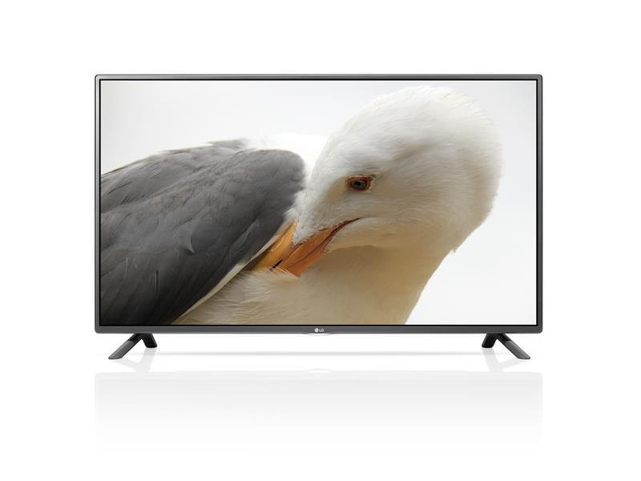
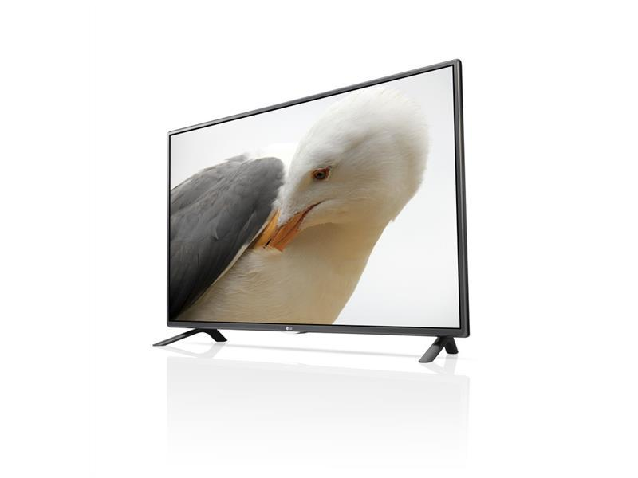

LG 42" LED Smart TV 42LF580V
Full-HD, 100Hz MCI, 3xHDMI, PVR, DVB-T2/C/S3


LG CLOUD
Med skytjenesten LG Cloud kan du spille av innholdet på smart-TV-en hvor og når som helst. Du kan også raskt finne frem til videoer, musikk og bilder som er lagret på andre enheter, og se dem på TV-en.
SMART ENERGY SAVING
Denne funksjonen omfatter kontroll av bakgrunnsbelysning for justering av lysstyrke, en utkoblingsfunksjon som slokker bildet og bare spiller av lyd og funksjonen Standby Mode Zero, som gjør at TV-en går i hvilemodus og dermed ikke bruker strøm.
MOTION ECO SENSOR
Motion Eco Sensor er en enestående, ny teknologi som reduserer strømforbruket ved å justere skjermens lysstyrke en tanke etter hastigheten på bildene.